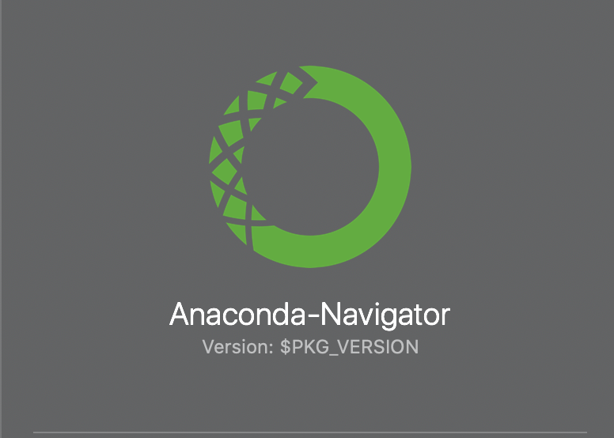
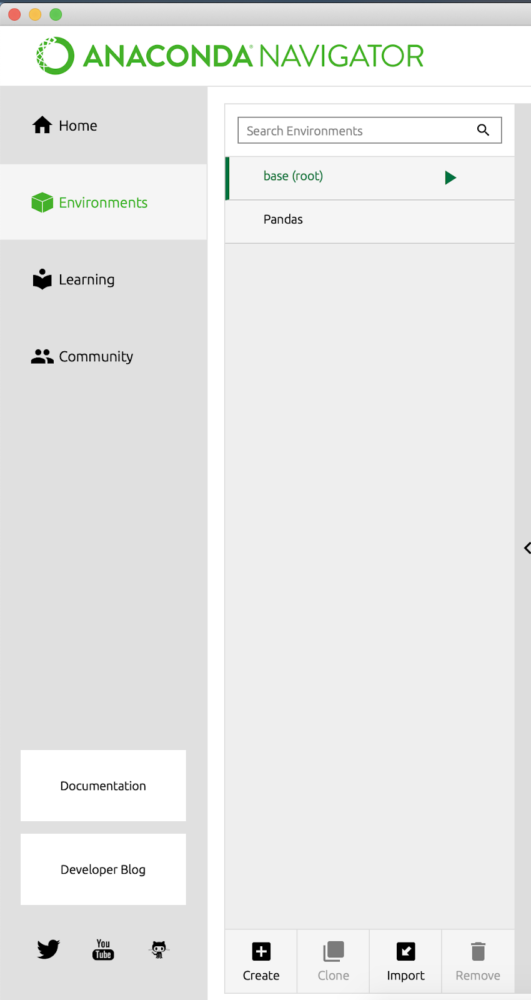
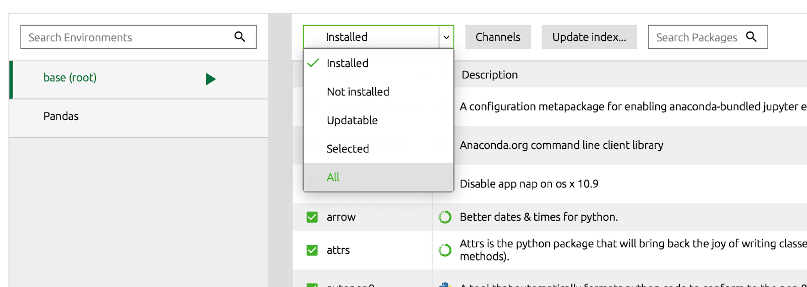
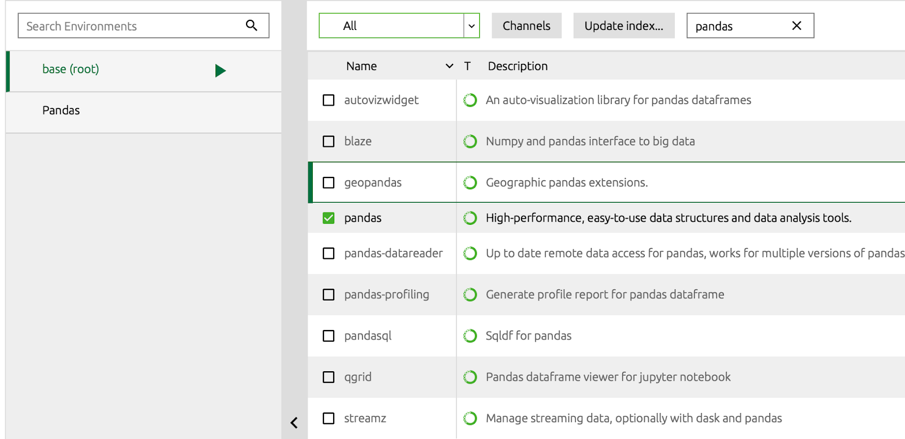

Install Plotly and Pandas via Anaconda
Installation instructions for Mac-OSX
Windows users, see the instructions for Windows below
Go to https://www.anaconda.com/products/individual#macos, then scroll down near the bottom, and install the Python 64-Bit Graphical installer. This installs software to help you install Anaconda.
Verify your installation by pressing Command+Space and typing ‘Anaconda’ in Spotlight. If you see Anaconda-Navigator as shown below, you have installed it. 
Now continue with Spotlight, open Anaconda Navigator and click on the environments tab on the left hand side.

Click on the environment that says “base (root)” and in the top center of the screen on the drop down menu, select “All” instead of “Installed”.

In the “Search Packages” bar, type in “pandas”. Select the checkbox next to the “pandas” package and click “Apply” in the bottom left corner of the interface. If you cannot find plotly, pandas, or networkx packages, click “Update index”.
Repeat Steps 4 and 5, but this time instead of “pandas”, install the “plotly” package.
Repeat Steps 4 and 5, and install the “networkx” package.
Installation instructions for Windows
Go to https://www.anaconda.com/products/individual#macos, then scroll down near the bottom, and install the Python 64-Bit Graphical installer. This installs software to help you install Anaconda.
For “Select Installation Type” install for “Just Me” (recommended).
Choose a destination folder to install Anaconda in. Our recommendation is to install it in
C:\Users\YourName\anaconda3.Under “Advanced Installation Options” choose “Register Anaconda3 as my default Python 3.8” only.
Now open Anaconda Navigator and click on the environments tab on the left hand side.
Click on the environment that says “base (root)” and in the top center of the screen on the drop down menu, select “All” instead of “Installed”. 
In the “Search Packages” bar, type in “pandas”. Select the checkbox next to the “pandas” package and click “Apply” in the bottom left corner of the interface. 
Repeat Steps 6 and 7, but this time instead of “pandas”, install “plotly”.
Repeat Steps 6 and 7, and install the “networkx” package.